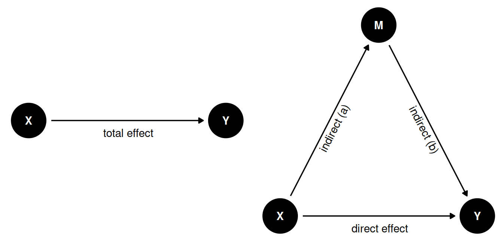
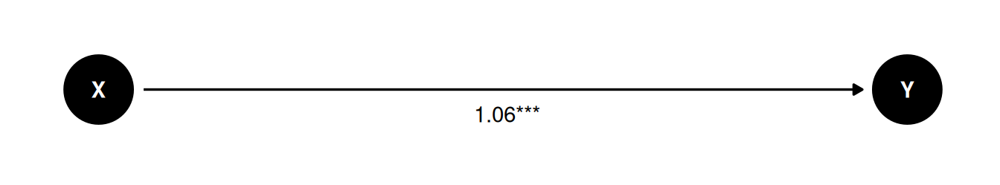
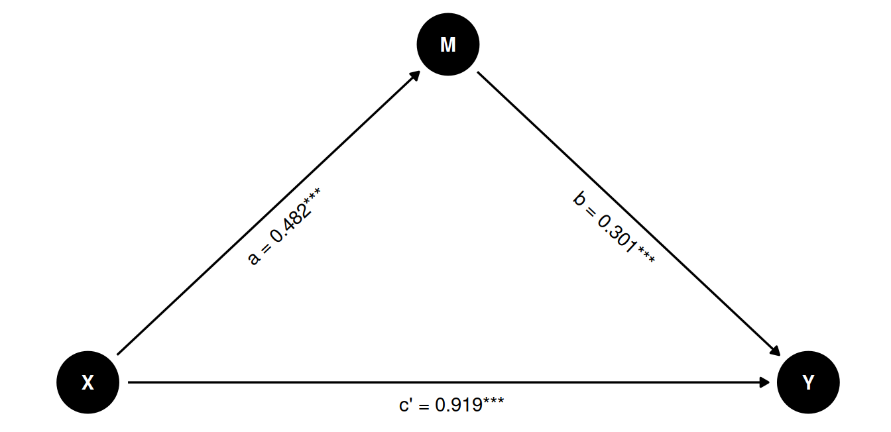
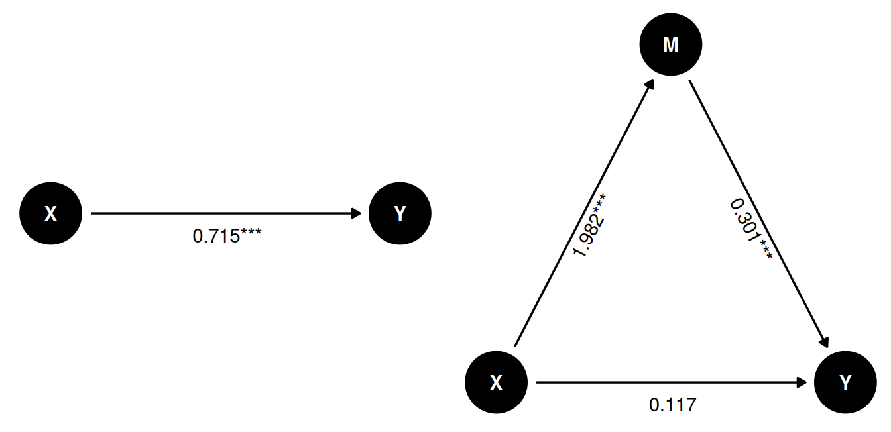

Mediation Analyses
Conducting simple mediation analyses in R
Introduction
In this tutorial, we will give a preliminary introduction on how to conduct simple mediation analyses in R. We will focus on running multiple regression analyses manually, to explain the concept of mediation and how to test for its significance. In practice, it is often recommended to use specialized packages for mediation analyses, such as lavaan or mediation, but to develop a good intuition for the concept, you should first understand the basics.
What is mediation?
We are often interested in explaining a relationship or causal effect between two variables (e.g., X and Y). Many theories suggest that X does not necessarily directly influence Y, but that this effect is mediated by a third variable, which we can call M (for Mediation). We can visualize this interplay between the three variables like so:
In the left figure we see the total effect of X on Y. Here we only have one path from X to Y.
In the right figure, we see a mediation model, where the effect of X on Y is mediated by M. This gives us two different paths for how X to have an effect on Y:
- direct effect. The direct path
X -> Y. - indirect effect. The indirect path
X -> MandM -> Y. We can calculate the indirect effect by multiplying both arrows (a * b)
The mediated model can help us distinguish between different scenarios:
- Full mediation: Only the indirect effect of
XonYthroughMis significant. - No mediation: Only the direct effect of
XonYis significant. - Partial mediation: Both the direct and indirect effects of
XonYare significant. - No effect: Neither the direct nor the indirect effect of
XonYis significant.
Note of caution: Theoretically, mediation models almost always suggest some sort of “causal chain”. Yet, the analysis itself cannot prove causality. The same caution applies as discussed in the causality section.
Packages and simulated data
library(tidyverse)
library(sjPlot)For this tutorial we are going to simulate some data that align with the Figure presented above. You don’t need to understand this process, and can just run the code to create the data. But if you are interested, here is what we are doing:
- Set a seed to make our simulation reproducible. This ensures that even though we are creating random data, the outcome is the same every time we run the code.
- Create a variable
Xthat is normally distributed (mean = 3, sd = 1). - Create a variable
Mthat is influenced byX(\(b = 2\)), with random noise.1 - Create a variable
Ythat is influenced byM(\(b = 0.3\)), andX(\(b = 0.8\)), with random noise. - This gives us a data set in which
XinfluencesYboth directly and indirectly throughM.
set.seed(42)
n <- 500
X <- rnorm(n, 3, 1)
M <- 0.5*X + rnorm(n, 0, 2)
Y <- 0.3*M + 0.8*X + rnorm(n, 0, 3)
d <- tibble(X,M,Y)Simple regression analyses
Let’s first look at the model without the mediator M.
m_total <- lm(Y ~ X, d)
tab_model(m_total)| Y | |||
|---|---|---|---|
| Predictors | Estimates | CI | p |
| (Intercept) | -0.48 | -1.32 – 0.36 | 0.263 |
| X | 1.06 | 0.80 – 1.33 | <0.001 |
| Observations | 500 | ||
| R2 / R2 adjusted | 0.109 / 0.107 | ||
This gives us the total effect of X on Y.

Now let’s look at the model with the mediator M. We can break this model down into two separate regression models:
- Model 1:
Mpredicted byX. - Model 2:
Ypredicted byXandM.
m1 <- lm(M ~ X, d)
m2 <- lm(Y ~ X + M, d)
tab_model(m1, m2)| M | Y | |||||
| Predictors | Estimates | CI | p | Estimates | CI | p |
| (Intercept) | 0.01 | -0.57 – 0.59 | 0.973 | -0.48 | -1.30 – 0.34 | 0.250 |
| X | 0.48 | 0.30 – 0.67 | <0.001 | 0.92 | 0.65 – 1.19 | <0.001 |
| M | 0.30 | 0.18 – 0.43 | <0.001 | |||
| Observations | 500 | 500 | ||||
| R2 / R2 adjusted | 0.049 / 0.047 | 0.148 / 0.145 | ||||
Let’s visualize the paths in the mediation model:

We can see that all paths are significant, suggesting that there is both a direct and indirect effect of X on Y. In other words, this is a partial mediation.
We can calculate the indirect effect by multiplying the coefficients of the two paths:
\[a \times b = 0.482 \times 0.301 = 0.145\]
Testing the significance of the indirect effect
If both parts of the indirect effect (a * b) are significant, there is a good chance that the indirect effect is significant. And similarly, if one part is not significant, the indirect effect is likely not significant. However, this is not always the case, so it is better to explicitly test the significance of the indirect effect.
This is not straightforward, and requires more advanced techniques, such as bootstrapping or Monte-Carlo simulations. We will not cover these techniques in this tutorial, because it distracts from the goal of teaching the basic concept of mediation. Just be aware that this is a limitation of the simple mediation analyses we have shown here, and that it is therefore better to use advanced techniques or specialized packages for mediation analyses in actual research.
Full mediation example
Full mediation
Since we’re working with simulated data, we can make a small adjustment to our code to simulate a scenario where M fully mediates the effect of X on Y. Notice that our simulation is almost identical, except that we set the coefficient of X on Y to 0.
set.seed(42)
n <- 500
X <- rnorm(n, 3, 1)
M <- 2*X + rnorm(n, 0, 2)
Y <- 0.3*M + 0*X + rnorm(n, 0, 3)
d_full <- tibble(X,M,Y)To nicely interpret the models side-by-side, we’ll add some labels and drop the confidence intervals.
m_total <- lm(Y ~ X, d_full)
m1 <- lm(M ~ X, d_full)
m2 <- lm(Y ~ X + M, d_full)
tab_model(m_total, m1, m2,
dv.labels=c("Y ~ X", "M ~ X", "Y ~ X + M"), show.ci = FALSE)| Y ~ X | M ~ X | Y ~ X + M | ||||
| Predictors | Estimates | p | Estimates | p | Estimates | p |
| (Intercept) | -0.48 | 0.263 | 0.01 | 0.973 | -0.48 | 0.250 |
| X | 0.71 | <0.001 | 1.98 | <0.001 | 0.12 | 0.522 |
| M | 0.30 | <0.001 | ||||
| Observations | 500 | 500 | 500 | |||
| R2 / R2 adjusted | 0.052 / 0.050 | 0.465 / 0.464 | 0.094 / 0.090 | |||

Here we do have an effect of X on Y, but when we control for M, the effect of X on Y is no longer significant. Since both the effect of X on M and M on Y are significant, this is a case of full mediation.
No mediation example
No mediation
We can also simulate a scenario where M has no effect on Y. We do not make the effect of M on Y zero, but we set the coefficient to a very small value, so that it is not significant.
set.seed(42)
n <- 500
X <- rnorm(n, 3, 1)
M <- 0.5*X + rnorm(n, 0, 2)
Y <- 0.05*M + 0.8*X + rnorm(n, 0, 3)
d_no_mediation <- tibble(X,M,Y)
m_total <- lm(Y ~ X, d_no_mediation)
m1 <- lm(M ~ X, d_no_mediation)
m2 <- lm(Y ~ X + M, d_no_mediation)
tab_model(m_total, m1, m2,
dv.labels=c("Y ~ X", "M ~ X", "Y ~ X + M"), show.ci = FALSE)| Y ~ X | M ~ X | Y ~ X + M | ||||
| Predictors | Estimates | p | Estimates | p | Estimates | p |
| (Intercept) | -0.48 | 0.250 | 0.01 | 0.973 | -0.48 | 0.250 |
| X | 0.94 | <0.001 | 0.48 | <0.001 | 0.92 | <0.001 |
| M | 0.05 | 0.414 | ||||
| Observations | 500 | 500 | 500 | |||
| R2 / R2 adjusted | 0.091 / 0.089 | 0.049 / 0.047 | 0.092 / 0.089 | |||
In this case, the effect of X on Y is significant, but the effect of X on M is not. So there is no mediation effect. The full effect of X on Y is direct.
Testing mediation using PROCESS
The PROCESS macro for SPSS and SAS is a popular tool for mediation analyses. It is also available in R, using the bruceR package. Here we show you how to use PROCESS, using the same simulated data (d) as before. If you compare the results with our own manual analysis, you’ll see that the direct, total and indirect (a*b) effects are the same. But one important difference is that PROCESS also provides an explicit confidence interval for the indirect effect, based on bootstrapping.
To use PROCESS, you simply provide the data frame, and specify the column names for the dependent variable (y = "Y"), the independent variable (x = "X"), and the mediator (meds = "M").
library(bruceR)
set.seed(42)
n <- 500
X <- rnorm(n, 3, 1)
M <- 0.5*X + rnorm(n, 0, 2)
Y <- 0.3*M + 0.8*X + rnorm(n, 0, 3)
d <- tibble(X,M,Y)
PROCESS(d, y="Y", x="X", meds="M")
****************** PART 1. Regression Model Summary ******************
PROCESS Model Code : 4 (Hayes, 2018; www.guilford.com/p/hayes3)
PROCESS Model Type : Simple Mediation
- Outcome (Y) : Y
- Predictor (X) : X
- Mediators (M) : M
- Moderators (W) : -
- Covariates (C) : -
- HLM Clusters : -
All numeric predictors have been grand-mean centered.
(For details, please see the help page of PROCESS.)
Formula of Mediator:
- M ~ X
Formula of Outcome:
- Y ~ X + M
CAUTION:
Fixed effect (coef.) of a predictor involved in an interaction
denotes its "simple effect/slope" at the other predictor = 0.
Only when all predictors in an interaction are mean-centered
can the fixed effect denote the "main effect"!
Model Summary
──────────────────────────────────────────────────
(1) Y (2) M (3) Y
──────────────────────────────────────────────────
(Intercept) 2.684 *** 1.442 *** 2.684 ***
(0.133) (0.092) (0.130)
X 1.065 *** 0.482 *** 0.919 ***
(0.137) (0.095) (0.137)
M 0.301 ***
(0.063)
──────────────────────────────────────────────────
R^2 0.109 0.049 0.148
Adj. R^2 0.107 0.047 0.145
Num. obs. 500 500 500
──────────────────────────────────────────────────
Note. * p < .05, ** p < .01, *** p < .001.
************ PART 2. Mediation/Moderation Effect Estimate ************
Package Use : ‘mediation’ (v4.5.0)
Effect Type : Simple Mediation (Model 4)
Sample Size : 500
Random Seed : set.seed()
Simulations : 100 (Bootstrap)
Running 100 simulations...
Indirect Path: "X" (X) ==> "M" (M) ==> "Y" (Y)
────────────────────────────────────────────────────────────
Effect S.E. z p [Boot 95% CI]
────────────────────────────────────────────────────────────
Indirect (ab) 0.145 (0.041) 3.546 <.001 *** [0.075, 0.214]
Direct (c') 0.919 (0.117) 7.843 <.001 *** [0.657, 1.087]
Total (c) 1.065 (0.115) 9.245 <.001 *** [0.826, 1.230]
────────────────────────────────────────────────────────────
Percentile Bootstrap Confidence Interval
(SE and CI are estimated based on 100 Bootstrap samples.)
Note. The results based on bootstrapping or other random processes
are unlikely identical to other statistical software (e.g., SPSS).
To make results reproducible, you need to set a seed (any number).
Please see the help page for details: help(PROCESS)
Ignore this note if you have already set a seed. :)Footnotes
Note that what we’re doing here is simulating data using the regression equation. With
2*Xwe say that for every unit increase in X, M should go up by 2. Withrnorm(n, 0, 2)we add a residual (mean = 0, sd = 2) to the equation. We could also have added an intercept, but we left it out for simplicity.↩︎